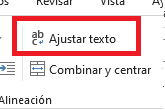

Coloque los datos correspondientes en los campos disponibles, que son Libro, Capítulo, y Versículos. En el campo de versículos puede colocar un grupo de versículos consecutivos. Por ejemplo, si necesitás los versículos desde Juan 13:4 al Juan 13:8, el valor de Libro sería "Juan", el de Capítulo "13", y el de Versículos "4-8".
Si se necesitan más de un versículo o de un grupo consecutivo de estos, se pueden buscar más al hacer click en el botón "Nuevo".
Una vez rellenados los campos correspondientes, para realizar la búsqueda, se debe hacer click en el botón "OK". Comenzará a buscar los versículos en internet. Cuando la búsqueda finalice saldrá un mensaje de "Copiado" en pantalla, lo que significa que ya se puede pasar al siguiente paso.
Una vez que recibimos el mensaje de “Copiado”, solo resta dirigirse al archivo de excel correspondiente, posicionarse en la primera celda (A1) y presionar las teclas Ctrl + V. Para visualizar mejor los versículos, se debe hacer click en la herramienta “Ajustar texto” ubicada en la barra de herramientas, sección “Alineación”.
Guardar el archivo excel para que los cambios se actualicen en el vmix.